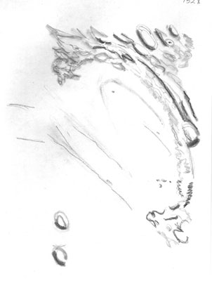

SJAA
Ephemeris
|
SJAA Ephemeris |
MooningDavid North |
First, some lunar events: The strongest eastern libration will occur around November 2 and 30 (twice!), which will be near third quarter (both times). There won't be any terminator over there, but it should be a very good opportunity to look over the eastern Maria (such as Anguis, Humboltianum, etc). The western libration will be November 18, which is more or less a mirror image of the eastern libration, and should afford a good glance of the actual Mare Orientale. This one happens at a convenient hour (starting right about sunset) so it's a definite "consider looking." The moon will pass very near Venus, Uranus, Neptune and Aldebaran at various times this month, but none of the occultations will be visible from the SF Bay Area (though it looks like Africa will get some real treats).
I get mail, oddly enough. And question/comments about the column, the moon, and the state of observations. Some of it was pretty interesting this month, so I think I'll do a "talkback" column this month. One of the more interesting questions was posed by Bill Arnett, who asked me if I knew anyone who would know where everything with a name in Rukl's atlas would be on the moon. Having not thought about it before, I realized I didn't... and in fact didn't know anyone personally who knew more named moon locations than me (though I forget them all the time). He was curious if there was a "Jack Zeiders & deep sky" of the moon around here. The answer is, no. And that's something of a sorry state of affairs, when you think about it. Here in the shadow of Lick, where looking at the moon was so well executed... However, just for ducks I tried counting how many things I could identify on the moon, and gave up (got tired) at 150. Lest you find this monumental, think about how many people around here can easily match that in Messier and NGC numbers. Probably hundreds! But how many named items are there on the moon? I don't know. Rukl lists (if I count right) over 800 craters alone! Plus eight catenae, 34 lakes, 34 dorsae, 40 seas, 23 individual mountains and 18 ranges, three marshes, 80 rilles, an ocean... I don't think I'm up to it. It's not as tough as memorizing the NGC, maybe, but more than I'll ever do. And perhaps we shouldn't be surprised that there aren't that many around after all...

|
A note from Frank VanSlager pointed out that my explanation of the libration in latitude was incorrect; that the bunk about the ecliptic was just rumor and innuendo and the real reason was much more simple and direct: that the moon's equator is inclined to its orbit, just like ours is (which causes the seasons and, you guessed it, exposes first one of our poles - then the other - to the sun. Yow! Not only did that make sense, it made more sense than the old explanation I read some thousand years ago and repeated in last month's column. That prompted me to look it up, and sure enough he's dead right. The inclination (for nitpickers) is 6.41 degrees by most sources, which matches closely (but not quite) to the actual librations. There are other factors, but they simply don't add up to much. Public peer review: what a concept! You get to air your silly ideas where everyone can see them. But this one is particularly onerous in that the wrong explanation is much harder to understand than the right one. Anyone who has read a history of dissemination of misinformation knows "innocent" (unthinking) parrots like myself are usually the biggest single factor in the continuation of such goofy folklore. Good call, Frank! Besides, it's nice to know someone reads the column.
Another point worth mentioning: the guy who put together an incredible collection of moon photos in a recently released book, Michael Light, will be our January speaker. This should be extremely interesting. He spent four years scanning the archives of the National Aeronautics and Space Administration in Houston, reviewing photographs taken from the six Apollo missions to the moon. He then employed digital technology to enhance the original NASA "master dupes." His book, Full Moon, inspired the SF Museum of Modern Art to put on an exhibition of very large copies of his photos until January 4, 2000. Don't worry, the moon is Y2K compliant....
|  |
| David North; last updated: February 05, 2002 | Prev Next |